Como manter a lista de associados do site em dia
Este guia mostra, tela por tela, como atualizar os associados com a planilha do sistema, corrigir um cadastro e conferir como a lista aparece para quem visita o site.
01Onde fica tudo
Entre no painel do WordPress do site da ACIC. No menu da esquerda, clique em Associados. Ali estão a lista de empresas, o cadastro de um associado novo, a importação da planilha e este guia, em Ajuda.
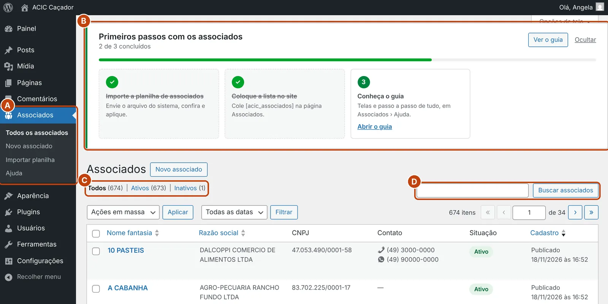
- AO menu Associados: Todos os associados, Novo associado, Importar planilha e Ajuda.
- BPrimeiros passos: aparece no começo e some sozinho quando tudo estiver pronto. Cada cartão leva direto para a tela certa.
- CFiltros da lista: Todos, só os Ativos (os que aparecem no site) ou só os Inativos.
- DBusca do painel. Acha pelo nome fantasia, pela razão social ou pelo CNPJ (com ou sem pontos).
Viu um botão ? ao lado de um campo? Clique nele para ver uma explicação curta e um link para o trecho deste guia.
02Atualizar pela planilha
Este é o jeito do dia a dia: em vez de conferir empresa por empresa, você envia a planilha que sai do sistema da ACIC e o plugin descobre sozinho quem entrou, quem saiu e quem mudou.
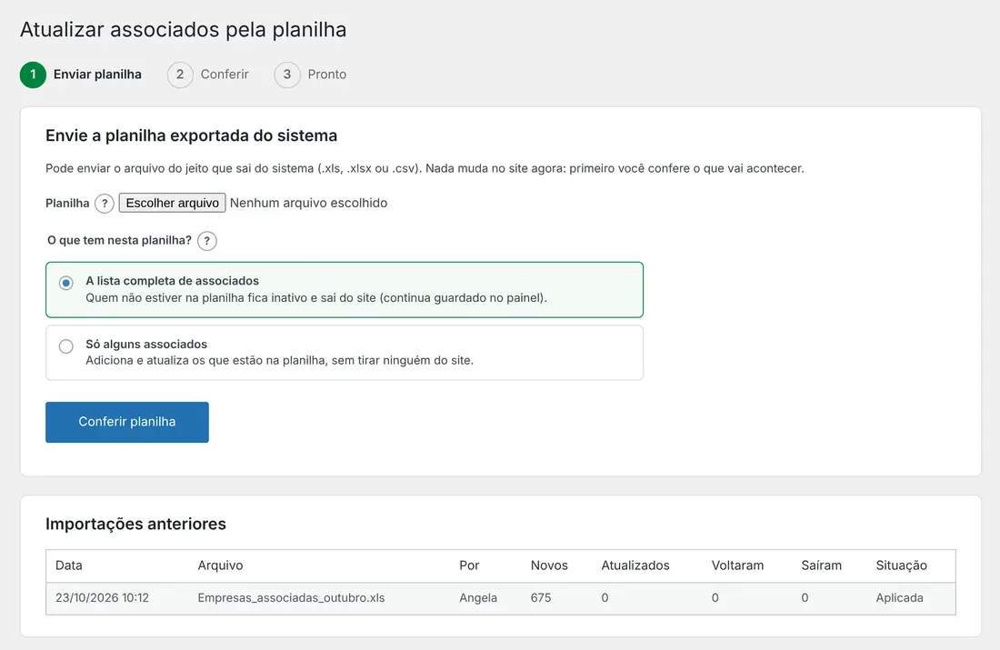
- Exporte a planilha do sistemaGere a lista de empresas associadas como sempre. Não precisa abrir nem arrumar o arquivo: pode ser
.xls,.xlsxou.csv. - Abra Associados › Importar planilhaNo menu da esquerda do painel.
- Escolha o arquivoClique em Escolher arquivo e selecione a planilha no computador.
- Diga o que tem na planilhaQuase sempre é a lista completa. Veja a diferença logo abaixo.
- Clique em Conferir planilhaNada muda no site ainda: primeiro aparece o resumo do que vai acontecer (capítulo 3).
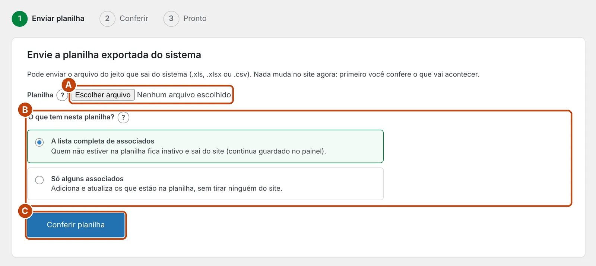
- AO arquivo da planilha.
- BO que tem nesta planilha: a lista completa ou só alguns associados.
- CConferir planilha: mostra o resumo antes de mudar qualquer coisa.
| Opção | Quando usar | O que acontece com quem não está na planilha |
|---|---|---|
| A lista completa de associados | A planilha do sistema, com todo mundo. É o caso normal. | Fica inativo: sai do site, mas continua guardado no painel. |
| Só alguns associados | Uma planilha montada à mão, só com empresas novas ou corrigidas. | Nada: continua como está. |
03Conferir antes de aplicar
Depois de enviar, aparece um resumo com o que vai mudar. Leia os números, abra as listas se quiser ver os nomes e só então clique em Aplicar alterações.
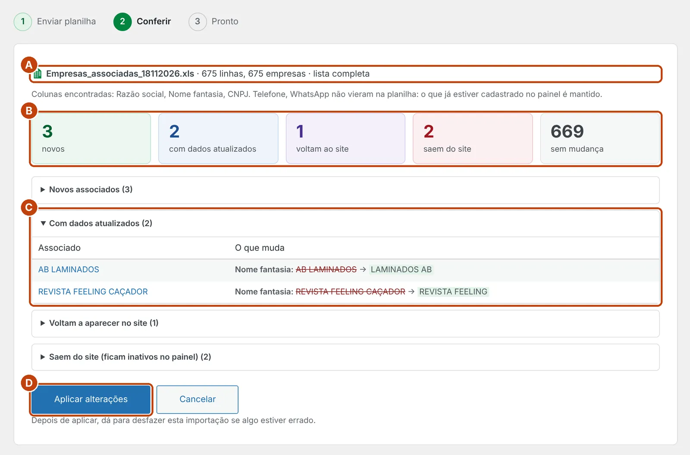
- AO arquivo enviado, quantas linhas tinha e quantas empresas são. Logo abaixo, as colunas que o plugin reconheceu.
- BO resumo em números (veja a tabela abaixo).
- CClique no título de cada grupo para ver os nomes. Em Com dados atualizados aparece o antes, riscado, e o depois.
- DAplicar alterações grava tudo. Se algo parecer errado, clique em Cancelar: nada é mudado.
| Número | O que significa |
|---|---|
| novos | Empresas da planilha que ainda não estão cadastradas. Entram no site. |
| com dados atualizados | Já estão no site, mas a planilha traz algo diferente (nome fantasia, razão social ou CNPJ). |
| voltam ao site | Estavam inativas e apareceram de novo na planilha. |
| saem do site | Estão no site, mas não vieram na planilha. Ficam inativas (só na lista completa). |
| sem mudança | Estão iguais. Nada acontece com elas. |
Se mais de 20% da lista for sair, o plugin mostra um aviso amarelo. Normalmente é sinal de planilha incompleta (um filtro ligado no sistema, por exemplo). Nesse caso, clique em Cancelar e exporte de novo.
04Pronto, histórico e desfazer
Ao aplicar, a lista do site já está atualizada. A tela mostra o que foi feito e oferece um atalho para desfazer.
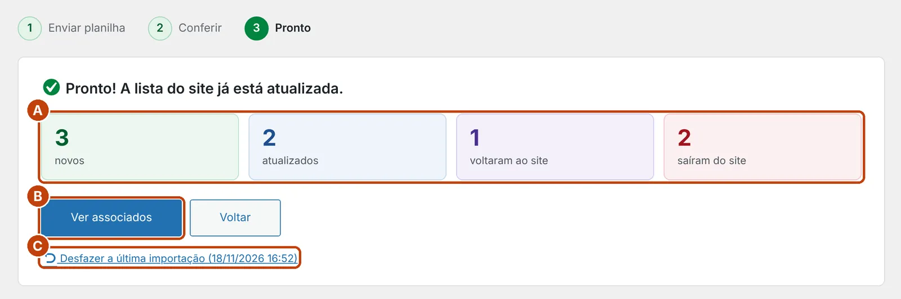
- AO que mudou nesta importação.
- BVer associados abre a lista do painel.
- CDesfazer a última importação: volta tudo como estava antes dela.
Na mesma tela Importar planilha, abaixo do envio, fica o histórico das últimas importações: quando, qual arquivo, quem enviou e o que mudou.
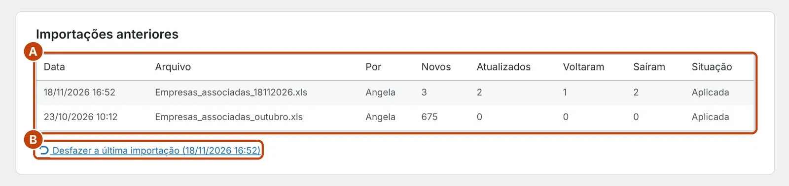
- AImportações anteriores. A coluna Situação diz se foi aplicada ou desfeita.
- BO atalho para desfazer a última importação.
Só a última importação pode ser desfeita. Se, depois dela, você editou à mão algum associado que ela tinha mudado, essa edição também volta para como estava antes.
05Cadastrar ou editar um associado à mão
Para uma correção pontual (um telefone, um nome fantasia) ou para incluir alguém antes da próxima planilha: Associados › Novo associado, ou clique no nome da empresa na lista.
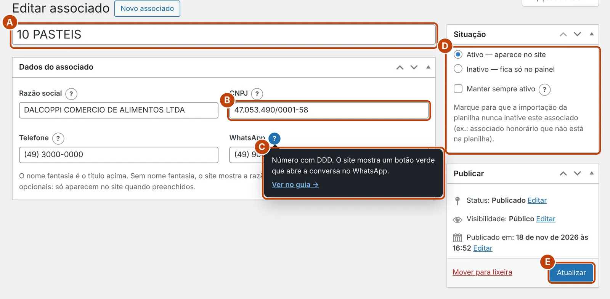
- ANome fantasia, como deve aparecer no site. Sem nome fantasia, o site mostra a razão social.
- BCNPJ: pode digitar só os números, o plugin coloca os pontos. Telefone e WhatsApp seguem o mesmo jeito, com DDD.
- CUma dica aberta pelo botão ?.
- DSituação: ativo aparece no site; inativo fica só no painel. Manter sempre ativo impede que a planilha tire este associado do site.
- EAtualizar (ou Publicar, num associado novo) grava. O site mostra a mudança na hora.
CNPJ, telefone e WhatsApp são opcionais. Se a empresa não tiver um deles, a linha no site fica só com o que existe, sem espaço vazio.
Se a planilha não tiver telefone ou WhatsApp, os números cadastrados à mão continuam. Mas, se a planilha trouxer um nome fantasia diferente, vale o da planilha: corrija também no sistema da ACIC para não voltar na próxima importação.
06Tirar do site, devolver e excluir
Passe o mouse sobre o nome de uma empresa na lista do painel. Aparecem os atalhos Editar, Inativar (ou Reativar) e Colocar na lixeira.
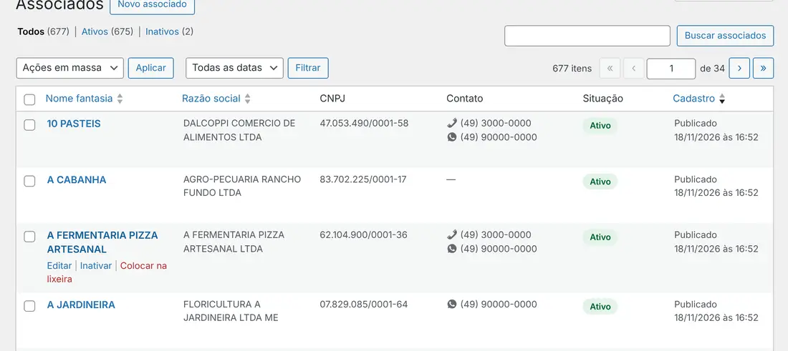
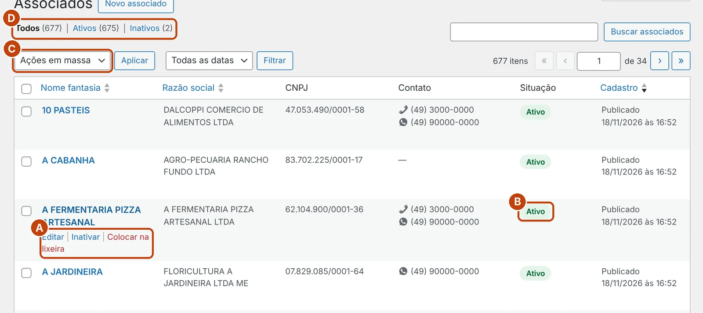
- AAtalhos da linha: Editar, Inativar/Reativar e Colocar na lixeira.
- BSituação de cada associado: Ativo (no site) ou Inativo.
- CAções em massa: marque várias empresas, escolha Inativar ou Reativar e clique em Aplicar.
- DClique em Inativos para ver só quem está fora do site.
| Ação | Sai do site? | O cadastro continua? |
|---|---|---|
| Inativar | Sim | Sim. Volta com Reativar ou quando a empresa aparecer de novo na planilha. |
| Colocar na lixeira | Sim | Fica 30 dias na lixeira do WordPress e depois é apagado. Prefira Inativar. |
07O que o visitante vê
A página de associados mostra todas as empresas ativas em ordem alfabética, separadas por letra. A busca e as letras funcionam na hora, sem recarregar a página.
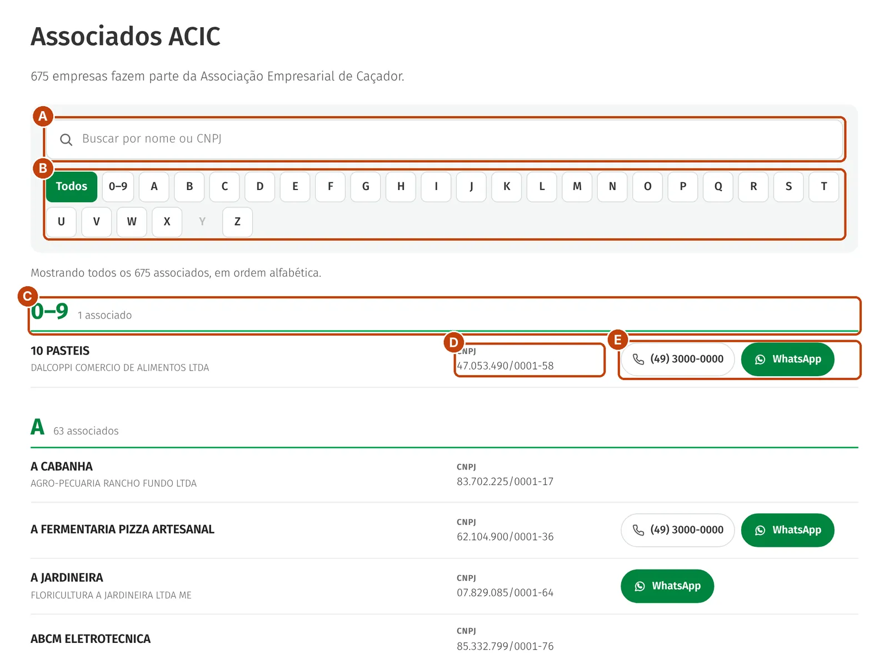
- ABusca por nome fantasia, razão social ou CNPJ. Não precisa de acento nem de letra maiúscula.
- BLetras: mostram só as empresas que começam com aquela letra. Letras sem nenhuma empresa ficam apagadas.
- CCada letra é um grupo, com a quantidade de empresas.
- DO CNPJ, quando cadastrado. CPF de pessoa física nunca aparece.
- ETelefone (no celular, toca e liga) e WhatsApp (abre a conversa), quando cadastrados. Os números da imagem são ilustrativos.
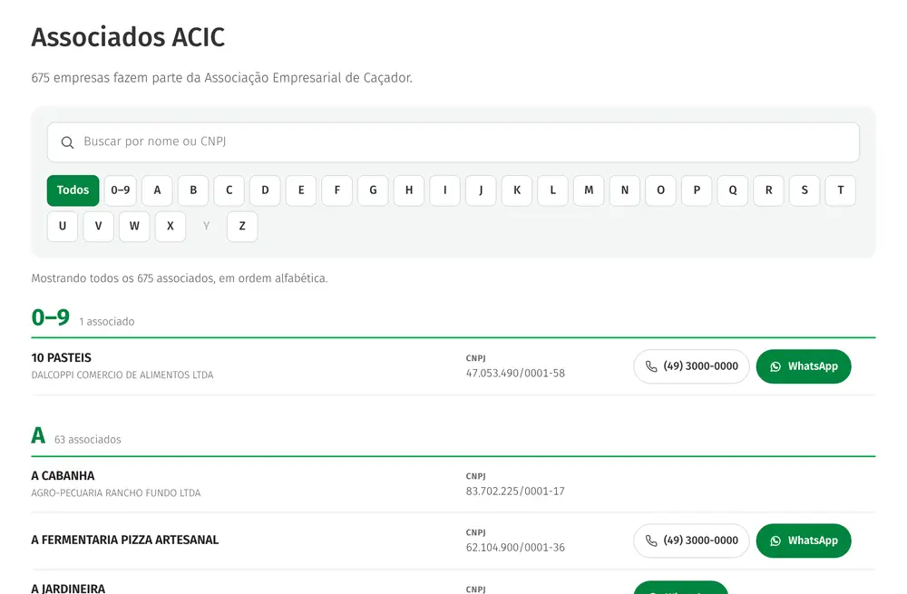
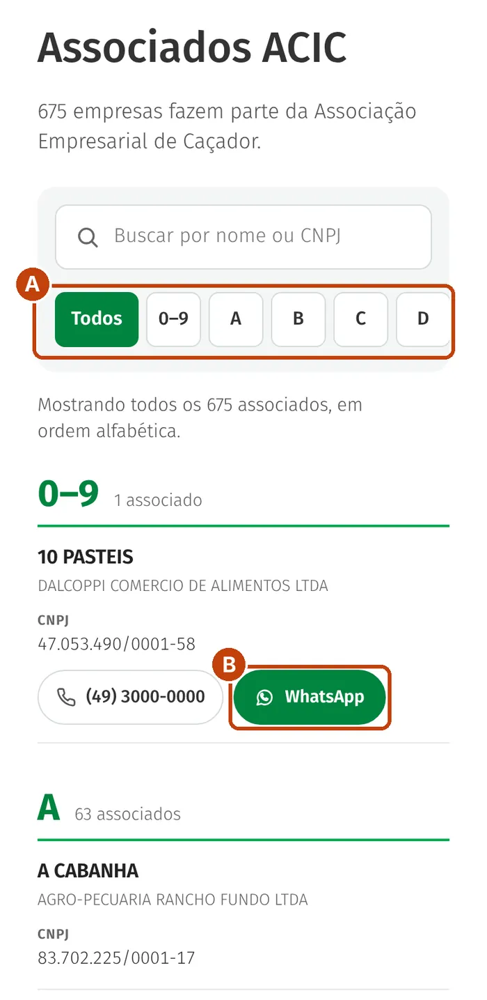
- ANo celular, as letras ficam numa faixa só: arraste para o lado.
- BOs botões de contato ficam grandes, fáceis de tocar.
08Colocar a lista no site
A lista aparece em qualquer página onde estiver o código [acic_associados]. No site da ACIC, a página é Associados, feita com o Divi.
- Abra a página no DiviEm Páginas, passe o mouse sobre Associados e clique em Editar com o Divi (ou abra a página e use Ativar o Visual Builder).
- Troque a lista antigaApague os módulos Alternar (toggles) da lista antiga, que eram um por empresa.
- Adicione um módulo TextoNo lugar deles, insira um módulo Texto e cole
[acic_associados]. - SalveClique em Salvar. Pronto: daqui em diante a página se atualiza sozinha a cada importação ou edição.
Opções do código
Para esconder uma parte, acrescente a opção com "nao". Exemplo: [acic_associados total="nao"].
| Opção | O que controla | Padrão |
|---|---|---|
total | A frase “675 empresas fazem parte da Associação…” no topo | sim |
busca | O campo de busca | sim |
letras | Os botões de A a Z | sim |
09Como a planilha deve vir
A planilha que sai do sistema da ACIC já vem do jeito certo. Se um dia o formato mudar, o plugin procura as colunas pelo nome do cabeçalho, em qualquer ordem, com ou sem acento:
| Campo | Nomes de coluna aceitos | |
|---|---|---|
| Razão social | NOME, RAZÃO, RAZÃO SOCIAL, EMPRESA | obrigatória |
| Nome fantasia | NOMEFANTASIA, NOME FANTASIA, FANTASIA | opcional |
| CNPJ | CNPJ, CNPJ/CPF | opcional |
| Telefone | TELEFONE, FONE | opcional |
| WHATSAPP, CELULAR | opcional |
- Cada CNPJ é um associado. Filiais aparecem separadas, cada uma com o seu nome fantasia e o seu CNPJ.
- Sem CNPJ, vale o nome. Linhas repetidas com a mesma razão social (mesmo com diferença de acento, pontuação ou LTDA/ME) viram um associado só.
- CPF não aparece. Quando a coluna CNPJ traz um CPF (pessoa física), o número é ignorado: não fica guardado nem aparece no site.
- Campo vazio não apaga. Um telefone em branco na planilha não apaga o que já está cadastrado no painel.
10Perguntas frequentes
Apareceu “formato antigo do Excel (.xls)”. E agora?
O arquivo foi salvo no formato do Excel 97-2003, que o plugin não lê. Abra no Excel, use Arquivo › Salvar como e escolha Pasta de Trabalho do Excel (.xlsx). Envie o arquivo novo. A planilha exportada pelo sistema da ACIC não tem esse problema.
Apareceu “Não encontrei a coluna com a razão social”.
A primeira linha da planilha precisa ter os nomes das colunas, com uma chamada NOME ou RAZÃO SOCIAL. Confira se não foi enviada outra aba ou outro relatório.
Importei a planilha errada. Como volto?
Em Associados › Importar planilha, clique em Desfazer a última importação (capítulo 4). Depois envie a planilha certa.
Uma empresa saiu do site, mas continua associada.
Ela não veio na planilha. Procure por ela na lista do painel, filtro Inativos, e clique em Reativar. Se ela nunca vem na planilha (um associado honorário, por exemplo), marque Manter sempre ativo no cadastro.
Corrigi um nome fantasia e a importação voltou o nome antigo.
A planilha manda no nome fantasia, na razão social e no CNPJ. Corrija também no sistema da ACIC, para a próxima planilha já vir certa.
A mesma empresa aparece várias vezes no site.
São filiais: cada uma tem o seu CNPJ. Se for a mesma empresa cadastrada duas vezes por engano, com o mesmo CNPJ, corrija no sistema da ACIC.
Quanto tempo leva uma importação?
Poucos segundos. Não feche a página enquanto ela estiver carregando depois de clicar em Aplicar alterações.
Quem pode importar a planilha?
Quem tem perfil de Editor ou Administrador no WordPress.
+Para a agência
- Atualizações: chegam pelo painel, em Plugins, quando uma nova versão é publicada no GitHub (
julcenei/acic-associados). - Cache: a lista do site fica guardada em cache e é refeita sozinha a cada importação, edição, inativação ou exclusão. Plugins de cache de página (e o Cloudflare) podem precisar de uma limpeza para mostrar a mudança na hora.
- Desinstalar: excluir o plugin apaga só o histórico de importações e o cache. Os associados ficam no banco de propósito.
- Este guia: o texto está em
manual/fonte.html. As capturas são refeitas comferramentas/capturas-manual.pynum WordPress de testes (dados deferramentas/dados-demo.php) e omanual/index.htmlé gerado porferramentas/montar-manual.py.
ACIC Associados · Jotapix Agência Criativa · Guia da versão 1.1